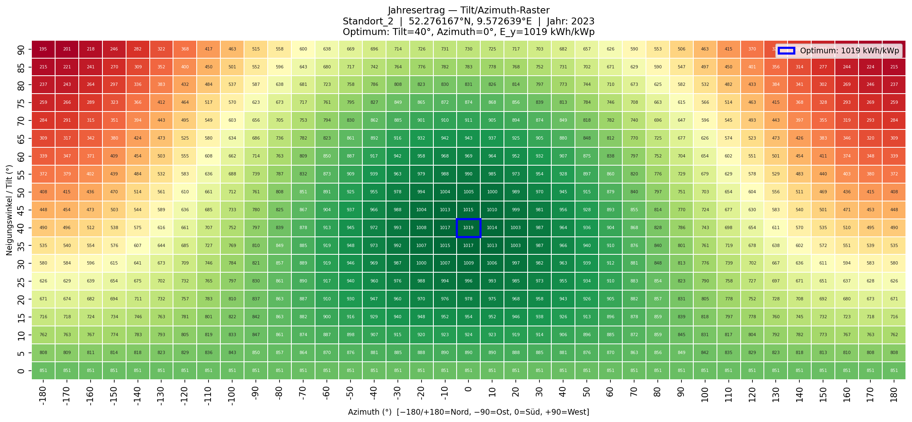
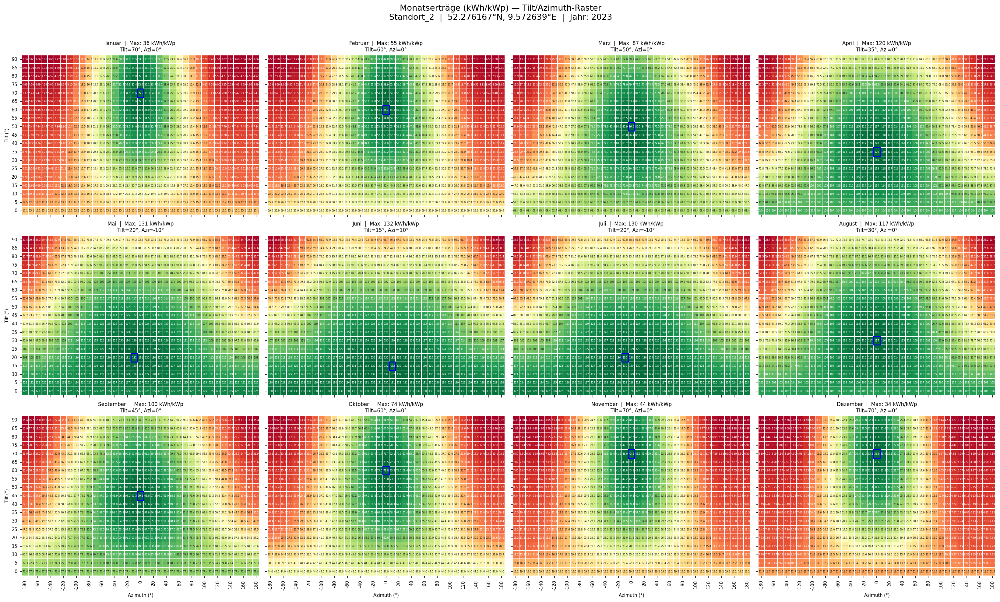
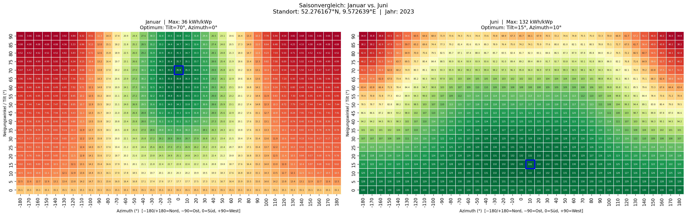
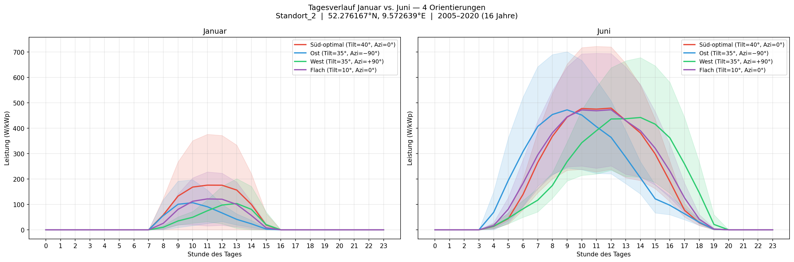
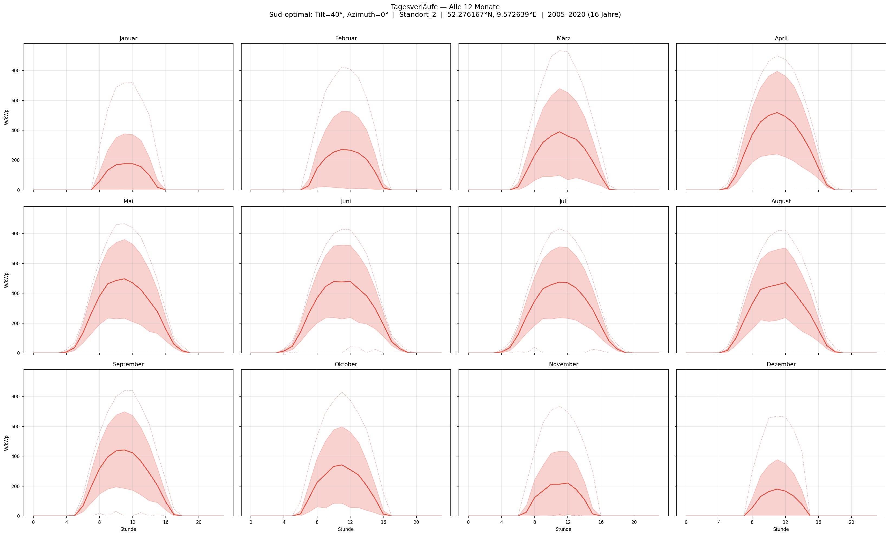

Grafiken zu Ertragsmaximum, Eigennutzung und Tagesauslastung — direkt ablesbar, ohne Simulation.
Welcher Tilt, welcher Azimuth — und nach welchem Kriterium? Je nach Projektziel kann die optimale Ausrichtung einer Photovoltaikanlage unterschiedlich ausfallen: Wer den Jahresertrag maximieren will, trifft eine andere Wahl als wer Eigenverbrauch optimiert oder die Tagesauslastung für eine Wärmepumpe gleichmäßig verteilen möchte. Bisher erforderte eine solche Abwägung aufwändige Simulationen. Dieser Beitrag zeigt, dass ein vorberechnetes Grafik-Set aus PVGIS-Daten diese Abschätzung in wenigen Minuten ermöglicht — ohne eigenes Simulationstool.
Für diese Analyse wurde die PVGIS API v5.2 der Europäischen Kommission (JRC) genutzt, um für einen Standort in Norddeutschland (52,3°N, 9,6°E) alle relevanten Tilt- und Azimuth-Kombinationen systematisch auszuwerten: 19 Tilt-Werte (0–90° in 5°-Schritten) × 37 Azimuth-Werte (−180° bis +180° in 10°-Schritten) = 703 Kombinationen. Für jede Konfiguration wurden stündliche Zeitreihendaten über 16 Jahre (2005–2020) abgerufen und statistisch ausgewertet — normiert auf 1 kWp Anlagenleistung mit 14 % Systemverlusten. Der vollständige Code ist auf GitHub verfügbar.
Die Grafiken decken die häufigsten Planungsfragen ab — je nach Kriterium liest man direkt die passende Ausrichtung ab:
Ertragsmaximum: Das Optimum liegt bei Tilt 40°, Azimuth 0° (Süd) mit 999,9 kWh/kWp. Der Bereich Tilt 20–50°, Azimuth ±30° ist robust: Abweichungen kosten weniger als 5 % — Planer können Dachgeometrien anpassen, ohne nennenswerte Verluste.

Eigennutzung maximieren: Wer Eigenverbrauch priorisiert — etwa mit Wärmepumpe im Winter — erkennt auf einen Blick, dass eine flachere Neigung (Tilt 20–30°) die saisonale Balance verbessert. Fassadeninstallationen (Tilt 90°) sind im Dezember überraschend konkurrenzfähig, da der tiefe Sonnenstand die steile Neigung begünstigt. Der saisonale Ausgleich variiert je Ausrichtung um den Faktor 7,7 — direkt aus Abb. 2 und 3 ablesbar.


Tagesauslastung beurteilen: Wer prüfen möchte, ob eine Anlage morgens oder abends mehr produziert — oder wie stark das Einspeiseprofil von der Lastganglinie abweicht — liest dies direkt aus Abb. 4 und 5 ab. Die 16-Jahres-Statistik liefert Mittelwert, interannuelle Variabilität (±1σ) sowie Maximum und Minimum über 16 Jahre — direkt als Planungsgrundlage nutzbar, ohne eigene Simulation.


Die gezeigten Grafiken machen aufwändige Einzelsimulationen für die erste Planungsphase überflüssig: Ertragsmaximum, Eigennutzungs-Optimum und Tagesauslastung lassen sich direkt ablesen — für beliebige Tilt/Azimuth-Kombinationen, ohne eigenes Simulationstool. Besonders bei Gebäuden mit eingeschränkter Dachgeometrie hilft das, schnell zu beurteilen, welcher Kompromiss zwischen Fläche und Ausrichtung tragbar ist. Der Ansatz ist reproduzierbar und auf andere Standorte übertragbar. Als nächstes: Erweiterung auf konkrete Anlagenkonfigurationen mit mehreren Strings und Integration des Lastgangs für Eigenverbrauchsoptimierung. Wer den Ansatz selbst anwenden möchte: Der Code ist auf GitHub verfügbar.